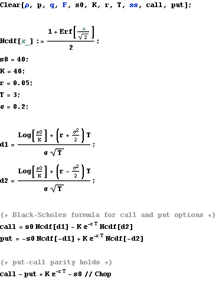
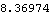
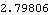
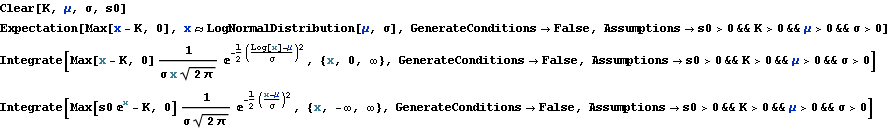
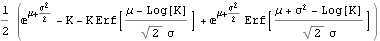
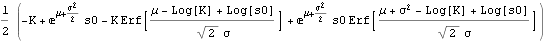

Black-Scholes formula
Black-Scholes formulae

Out[33]=

Out[34]=

Out[35]=

Derive The Black-Scholes Formula by Mathematica
Mathematica can work out the following integrals.
With suitable parameters, it can also work out the Black-Scholes Formula.



